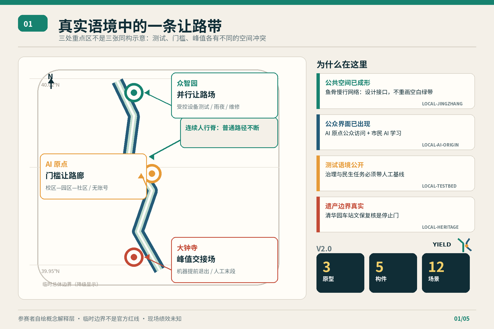
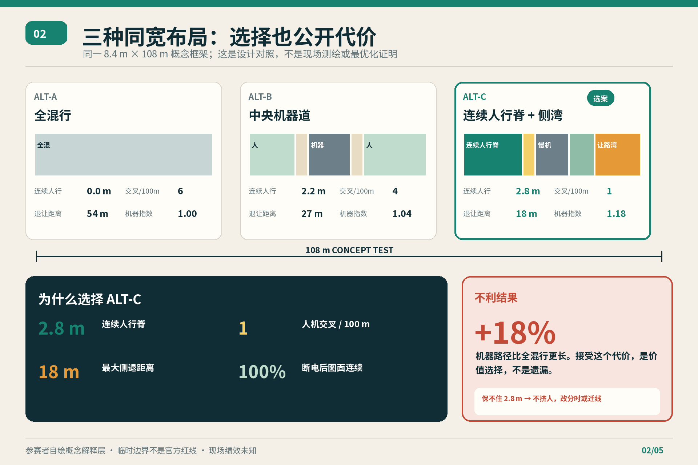
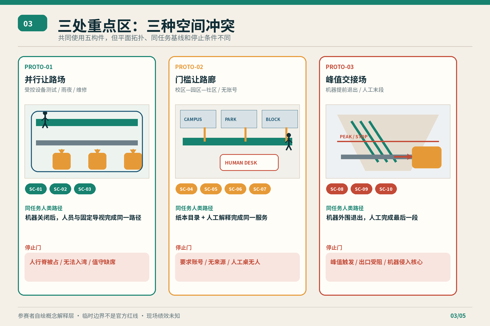
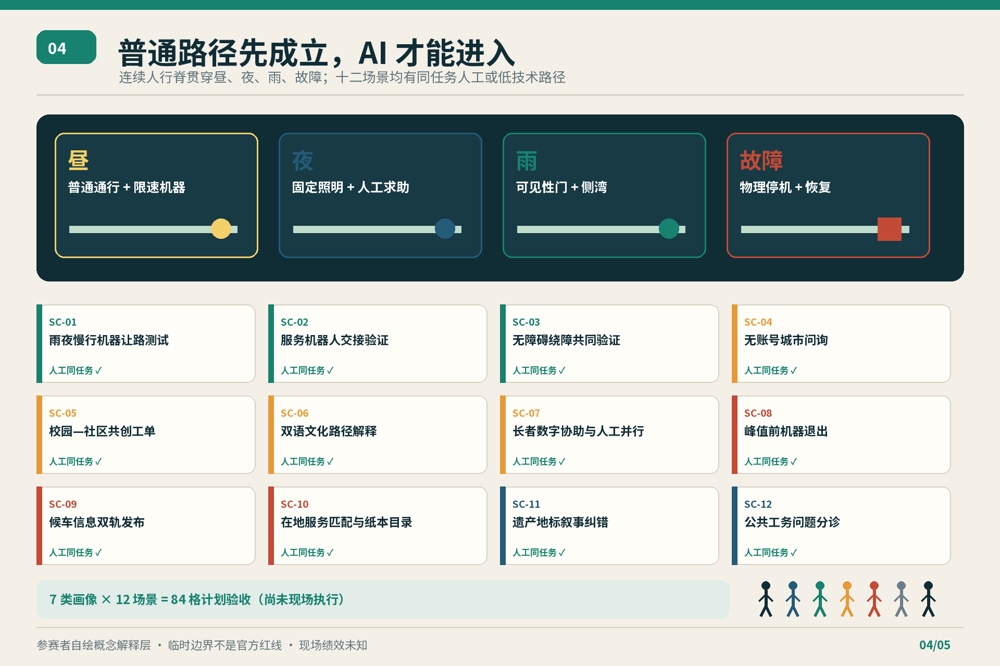
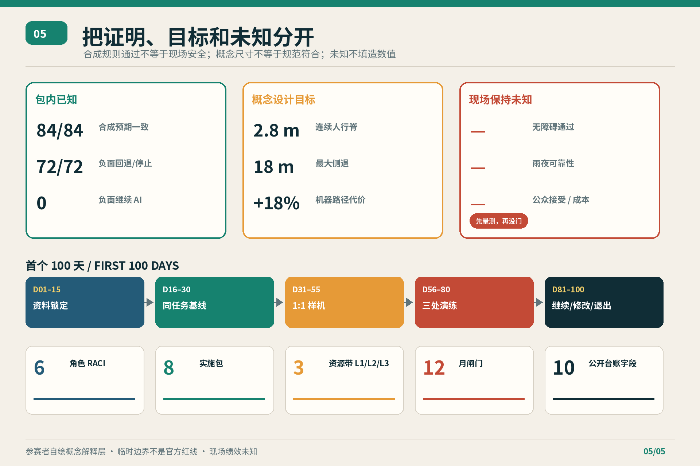

FORMAL DESIGN PACKAGE · 2026-08-21
京张让路 v2.0
在 AI 城市里，机器先学会给人让路。
一条连续人行脊、三类冲突原型、五件实体构件、十二项同任务公共场景。选案让机器多走 18%，换来人类路径连续与物理恢复。
3原型
5构件
12场景
+18% 机器路径：公开的不利结果

现场未知：正式边界 · 实测净宽 · 真实接受度 · 雨夜可靠性 · 成本 · 授权运营者
正式审阅索引
总览地图三层范围重点区域用地分区交通慢行蓝绿公共空间建筑更新项目AI 场景核心指标任务覆盖自检状态来源假设
11,412,825.386临时边界派生面积 / m²
0.123423示意绿地率
0.073281示意公共空间率
FIGURE 01
真实语境与总体机制
FIGURE 02
三种布局与不利结果

FIGURE 03
三处非同构原型

FIGURE 04
昼夜雨故障与十二场景

FIGURE 05
证据状态与首个 100 天
